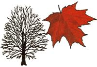
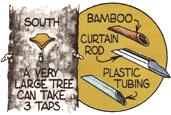
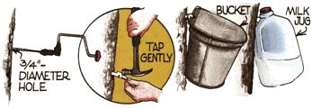
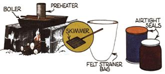

Though the sugar maple is the only tree tapped for commercial syrupmaking, almost all maples (members of the genus Acer)-as well as birches, butternuts, alders, hickories, and black walnuts-can turn out some mighty tasty natural sweeteners. The amount of sap, and its sugar content, will vary from tree to tree even within a species . . . but the following hardwoods (at least one of which can be found just about anywhere in the U.S. or Canada) have all proved to be reliable producers.
NORWAY MAPLE (Acer platanoides). Height 60', diameter 2'. Introduced from Europe as a roadside tree, widely planted across the United States.
BIGLEAF MAPLE (Acer macrophyllum), also called "broadleaf maple" or "Oregon maple". Height 30' to 70', diameter 1' to 21/2'. Found along stream banks and in moist canyon soil from southwestern British Columbia to southern California.
BLACK MAPLE (Acer nigrum), also called "hard maple" or "rock maple". Height 80', diameter 2' to 3 ' . A close relative of the sugar maple. Found in mixed hardwood forests and in the moist soil of valleys and uplands from southern Ontario east to southern Quebec and Vermont, southwest to Tennessee and Missouri, and north to southeastern Minnesota . . . as well as locally in adjacent states.
RED MAPLE (Acer rubrum), also called "swamp maple" or "scarlet maple". Height 60' to 90', diameter 2-1 / 2 ' . Grows in wet or moist soils of stream banks and valleys, swamps and uplands-and sometimes on dry ridges-in mixed hardwood forests from southeast Manitoba, east to eastern Newfoundland, south to Florida, and west to east Texas.
BOXELDER (Acer negundo), also called "ashleaf maple" and "Manitoba maple". Height 30' to 60', diameter 2-1 / 2 ' . Found, with various other hardwoods, in wet or moist soils-often along stream banks in valleys-and naturalized in waste places and roadsides from southern Alberta to extreme southern Ontario and New York, south to central Florida, and west to southern Texas. Also scattered from New Mexico to California, and naturalized in New England.
CANYON MAPLE (Acer grandidentatum), also called "bigtooth maple" or "sugar maple". Height 40', diameter 8" (this small tree should be drilled less deeply than are full-sized species). Found in the moist soils of mountain canyons and woodland plateaus from southeastern Idaho south to Arizona and east to southern New Mexico and TransPecos Texas.
FLORIDA MAPLE (Acer barbatum), also called "southern sugar maple" or "hammock maple". Height 50', diameter 2'. Grows in the moist soils of valleys, and along upland slopes, from southeastern Virginia south to central Florida, west to eastern Texas, and north to eastern Oklahoma
SWEET BIRCH (Betula lenta), al so called "black birch" or "cherry birch". Height 50' to 80', diameter 1' to 21/2'. Usually found in cool, moist uplands-among hardwoods and conifers from southern Maine, southwest to northern Alabama, and north to Ohio. Also found locally in extreme southern Quebec and southeastern Ontario.
SUGAR MAPLE (Acer saccharum) also called "hard maple" or "cock maple". Height 70' to 100', diameter 2 ' to 3 ' . Located from extreme southeastern Manitoba, east to Nova Scotia, south to North Carolina, and west to eastern Kansas. Grows locally in both northwestern South Carolina and northern Georgia.
SILVER MAPLE (Acer saccharinum) also called "soft maple" or "white maple". Height 50' to 80',diameter 3". Generally located-among other hardwoods-in the wet soil of stream banks, flood plains, and swamps... ranging from southern Ontario, east to New Brunswick, south to northwestern Florida, west to eastern Oklahoma, and north to Minnesota (it's also sometimes cultivated in the West).
[1] You'll know that "sap's up" when freezing nights are followed by warm-and usually sunny-days. Choose trees that are at least 10" (except in the case of the canyon maple, which should be a full 8 ") in diameter for single taps, 16" for two taps, and 22" or more for three taps. The spouts (also called spiles) can be made from sections of elderberry, sumac, bamboo, willow, or mullein stem with the pith removed . . . or you can use crimped pieces of curtain rod or lengths of plastic tubing.
[2] Drill a 3I 4 "-diameter hole-from 2 " to 3 " deep-on the south side of each tree. Be sure the bore takes a slightly uphill angle, and is at a convenient height. (Sap flow is usually heaviest below a large limb or above a big root.) Tap the spile in gently to avoid splitting the wood.
[3] Hang a clean and unrusted bucket, a plastic milk jug, or some other one- to five-gallon container securely under your spout, making sure it's adequately covered to keep out snow, rain, dirt, etc. Roughly speaking, you can expect 20 gallons of sap from each tap, and you'll need about 40 gallons to make 1 gallon of syrup. (Sap sours easily in warm weather, which means you must gather it frequently... keep it cool while it's being stored... and boil it up as soon as possible. Clean plastic trash cans-set in the chilly outdoors-make good holding tanks.)
[4] The steam produced when boiling down any significant quantity of sap would coat your kitchen's walls with moisture, so plan to cook the syrup outside, on a fireplace made of concrete blocks or a metal drum. Construct the "stove" so that the flames lick the bottom of your cooking container... but don't let smoke come in contact with the brew, as it will affect the syrup's taste and color.
Use a large, flat pan as your boiler, and keep the contents about two inches deep . . . slowly adding fresh sap as needed. (This can be done almost automatically by punching a small hole-the size will be determined by the rate of dehydration in your pan-in the bottom of a large can situated above the cooking pot, and then ladling sap into this "preheater".) From time to time, skim off the foam that forms on top of the syrup, using a kitchen strainer or a skimmer made from a 3" X 4" piece of wire screen in a metal frame with a wooden handle.
[5] After hours of cooking with no apparent change, the syrup will suddenly thicken very quickly . . . and it must be stirred and watched carefully during this critical stage. When the temperature reaches 7 ° above boiling (be sure to compensate for your altitude when figuring the boiling point) or when the liquid runs off a ladle in thin sheets, the syrup is done. Strain your natural sweetener through a heavy felt bag while it's still warm, then reheat the treat to 160 °F . . and pack it in sterilized containers with airtight seals, where it will keep indefinitely!
|
 |
 |
 |
|
 |
|
|